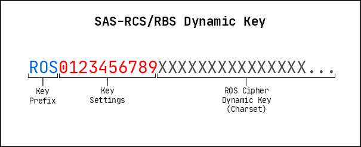

6. Keys for the SAS-RCS/RBS
by: saaiqSAS
Last Updated: 30/6/2024
The SAS-RCS/RBS Encryption Algorithms are built on top of the SAS-ROS Cipher and utilize the
same two types of keys: Dynamic Key and Static Key. However, unlike the ROS Cipher,
the SAS-RCS/RBS Dynamic Key contains additional components, and multiple Static Keys
are used instead of just one.
The SAS-RCS/RBS algorithms include additional cryptographic steps, such as obfuscation and shuffling.
The unique information required for these steps are stored in the initial part (settings) of the Dynamic Key
as integers. There are a total of 10 such integers. The later part of the Dynamic Key (Charset) is where the
object array (ROS Cipher Dynamic Key) used for ROS is stored.
Fig. 6.1 illustrates the structure of the SAS-RCS/RBS Dynamic Key.

Fig.6.1
Example 6.1: 128 char (7 bit) Dynamic Key returned from the SAS-ROSET API
ROS0312130250%'§Jab.g~½kC5{®M=h¹\¶¿£U,]>^1*40À6ºTdu|m/VtBI:D3RªN;zqfjwSF+WX)@(}s2yG¥8©H7i´±&K²A¤P-<»r¾[¦Q¼c« p¯o!¡Z°"³?Y¸$¢#¬9n·e_ `LElx¨vOµ
The Static Key for the SAS-RCS/RBS is identical to of ROS Cipher. In addition to being used for ROS
the Static Keys are also used for the shuffling step of the SAS-RCS/RBS as a source of deterministic randomness.
The SAS-ROSET API represents the Static Key as a string of characters similar to the Charset of the Dynamic Key.
Example 6.2: 128 char (7 bit) Static Key returned from the SAS-ROSET API
9]M$f @¶N?G:¡º;%«io3\SRdb¹cµEagU+>u-t¯Xr²5'³y7V¦[¤T_Yk ½|H^,8.J<zªmv¿©p·x{}°I¥P¢K0`£F§&Q4wLjq¼sW®(±¸À~eZ¬C´=AB»#2*/!¨"¾h)6lO1Dn
Dynamic Key Settings
The following list provides a brief description of what each setting index (on Fig.6.1) represents along with the accepted values.
0 → ROS Method (0: m1, 1: m2)
1 → Static Key reversing order (min 0, max 3)
2 → RGM Status for text (0: disable, 1: partial, 2: full) [RCS Only]
3 → RGM Base (0: base2, 1: base10, 2: base16, 3: base64) [RCS Only]
4 → Empty
5 → Data Size Increase: For Every (min 0, max 9)
6 → Data Size Increase: Add - Tenths (min 0, max 9)
7 → Data Size Increase: Add - Units (min 0, max 9)
8 → Empty
9 → API Version ID
0. ROS Method: This index represents the ROS method to use in encryption - Either method 1 or method 2
[Details on the methods for ROS Cipher can be found in Section 1 - SAS-ROS Cipher]
1. Static Key Reversing Order: The SAS-RCS/RBS creates additional Static Keys in memory by
reversing certain Static Keys from the provided set. By default, half of the Static Keys will be
reversed and used as standalone Static Keys during processing. For example, if 6 Static Keys are
provided, the data will be processed with 9 Static Keys (6 original + 3 reversed). The "reversing order"
determines the starting Static Key and the direction in the provided list from which each Static Key
will be reversed until half of them are reversed.
2. RGM Status: The SAS-RGM algorithm is used in SAS-RCS to represent a character not in the
Dynamic Key in terms of the characters within the Dynamic Key. The "RGM Status" value
determines whether this feature is enabled and to what extent it is used. It can be enabled partially,
fully, or disabled. Disabling is not recommended. "Full" status processes all data characters
(not limited to only external characters) through the RGM algorithm, while "Partial" status only processes the
required characters. Note that the output size of RGM for a single character will be large and varies depending
on the RGM Base used.
[Details on the SAS-RGM algorithm can be found in Section 7 - SAS-RGM: Random Group Mapping]
3. RGM Base: The SAS-RGM first convert charcters to its base (e.g. binary, hex) values before processing.
The "RGM Base" decides which base to use in this step - Either base2, base16 or base64. Smaller bases mean output
size would be larger, but provides more randomness to the output. Larger bases are better to be used with larger keys.
5. Data Size Increase: For Every: This value represents the 'n' value in the ratio n:m
6,7. Data Size Increase: Add: This value represents the 'm' value in the ratio n:m
9. API Version ID: This value contains the X value of the API version format vX.Y.Z. This value
can change after an update to the algorithm itself, or an update to the implementation (API), which makes the updated version
non backwards compatible with older versions.
Keyspace
The effective keyspace for the ROS Cipher is the factorial of the key length (L!), representing
the Sub-Space. [Details on the keyspace for the ROS Cipher can be found in
Section 2 - Keys for the SAS-ROS Cipher].
This keyspace applies to one pair of keys (Dynamic Key and Static Key) that form a substitution table.
The SAS-RCS/RBS uses multiple Static Keys paired with a single Dynamic Key, resulting in multiple
substitution tables. To determine the effective keyspace for the SAS-RCS/RBS, multiply the effective keyspace for
each pair. This is given by (L!)^number_of_st_keys.
This keyspace is not yet complete, as the SAS-RCS/RBS include additional steps (settings). The keyspace for the
settings is found by the product of the maximum values for each individual setting. Thus, 2*4*3*3*2*9*99 = 128304.
The accurate effective keyspace is then the product of the settings keyspace and the keyspace found earlier. This is
given by ((L!)^number_of_st_keys) * 128304.